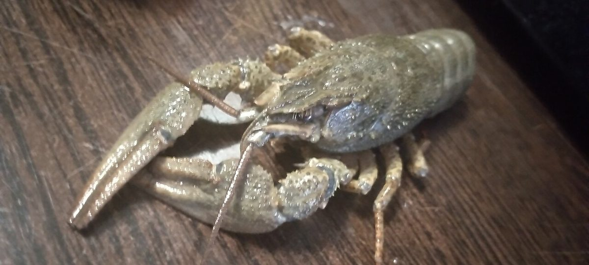

A friendly rivalry over one giant Kentucky crayfish sent scientists on a nationwide hunt — and the real record-holder turned up hiding in a museum drawer.
Somewhere in a Kentucky creek, a biologist reached under a rock and pulled out a crayfish so big she was sure it was a world record. People started calling it "Crawzilla" (its everyday name is crawdad). Then scientists checked, and Crawzilla turned out not to be the biggest at all. What happened next turned a friendly rivalry into a nationwide crayfish hunt.
The crawdad that started it all
Caitlin Bloomer, a teaching assistant professor at the University of Illinois, was the one who hauled Crawzilla out of the muck during a creek survey in Kentucky. She was convinced it was the largest crayfish anyone had ever recorded.
She was also competitive enough to prove it. Bloomer started emailing biologists and museum curators all over the country, asking them a simple question: do you have any really big crayfish sitting in your collections? The reply turned into a coast-to-coast challenge.
A nationwide search, one pair of calipers at a time
Calipers are the precise measuring tools that click shut around an object to read its exact width. Curators used them on preserved crayfish, measuring just the body part called the carapace — the hard "head and back" shell, without the tail, claws or antennae.
When the measurements came back, the team pulled together a list of 20 unusually large crayfish, spread across 18 different species. They published the whole ranking in the scientific journal Ecology, in a study with a wonderfully honest title: "North American crayfish: A quest for the biggest catch."
The real winner was hiding in a museum
The true champion was not Crawzilla. It was a Tennessee bottlebrush crayfish sitting quietly in a collection at West Liberty University, in West Virginia.

It measured 86.6 millimeters — about 3.4 inches — and remember, that is only the carapace. Its shell alone is roughly the length of a credit card. Add the tail and claws, and the animal stretches nearly the width of a sheet of notebook paper.
Here is the best part: this record-holder is not a new catch. It was collected back in 2011 by Dr. Zac Loughman and his students at West Liberty. It had been resting in a museum drawer for about fifteen years, patiently being the biggest known crayfish in North America the whole time, with nobody noticing.
Crawzilla, for the record, did not go home empty-handed. It made the top twenty, and it was the only burrowing crayfish on the list.
The mystery of the size ceiling
While the scientists tallied the winners, a strange pattern appeared. Almost every giant crayfish — regardless of species, regardless of whether it lived in a big river or a small stream — topped out somewhere around 80 millimeters. Past that point, they just stop getting bigger.
That has researchers puzzled. North American crayfish seem to run into a kind of biological size limit, and one idea is that it comes down to their muscles or their hard outer shell, called an exoskeleton. Growing a huge, heavy shell might simply get too costly to keep up.
So the very biggest Crawzilla-sized moment may be a ceiling set by crayfish biology itself, not by anything in the creek.
The takeaway
Crayfish live in streams and creeks all across North America, tucked under rocks in shallow water. The world record sat in a drawer for years because nobody had gone looking. Which is a nice reminder that sometimes the biggest discovery is just a matter of asking people to check what they already have.
If you live near a creek, flip over a flat, sunken rock slowly and let it slide back exactly where you found it. You might be sharing your backyard with a future record-holder.
Sources: ScienceDaily — "Crawzilla" was huge. Then scientists found an even bigger crayfish · University of Illinois ACES — Biologists compete over North America's largest crayfish